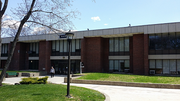

Mission: Residence Life seeks to develop an environment that supports the academic success, retention and rights of resident students by providing services that promote personal responsibility and respect for others. Motto: 3R's – Rights, Responsibility and Respect Dear Prospective Resident Student, "Welcome to your new home!" That's what you'll hear on check-in day next semester. Living on campus isn't just "living away from home," it's "living at your home-away-from-home." The Residence Life Staff recognizes that to gain the full college experience, living on campus is a great asset. Residing on campus is fun and educational, and research shows that students who live on campus earn higher GPAs and are more likely to graduate within four years. Living on campus makes the numerous resources on campus, such as the tutoring canter, gym, and library, more accessible to you. It is also easy for residents to become more involved, meet people, and participate in campus activities. The residence halls are convenient to academic and administrative areas on campus and offer an environment that supports and complements your academic endeavours. Residence hall living offers you the opportunity to meet other students and forge friendships that can last a lifetime. It also provides you with the opportunity to learn about other cultures and lifestyles, as well as learn more about yourself. Students who live in the residence halls can experience significant personal growth as a result of their new found independence. If you have any questions about living on campus, please don't hesitate to call us. Thank you for your interest in residing at Farmingdale State College. We look forward to being part of this wonderful experience..
The following applies to all students living in the College Residence Halls: In order to reside in the residence halls, an individual must be a registered Farmingdale State College student. Preference for spaces will be given to those students who are full-time and matriculated. Students must fill out a housing application. This can be found in your Accepted Student Packet. Students will be notified by Residence Life once an application is received. Correspondence will follow giving information on status, room assignment, check-in day, and other information that is important for resident students to know.
Students who withdraw from the residence halls to enter military service having the same criteria as defined in "Tuition and Fee Refund Policy for Military Service" prior to the end of the academic term will have their room and board charges prorated according to the week that the student officially withdraws from the residence halls. With respect to refunds for military service, this policy supersedes the room and board refund policy for normal withdrawals, which pertains to withdrawals from the first through the fourth week of the semester. Also, this policy is directed to adjusting a student's charges for room and board and the resultant refund, and does not apply to any return of federal financial aid resulting from such transactions, to which federal regulations on return of such funds apply.